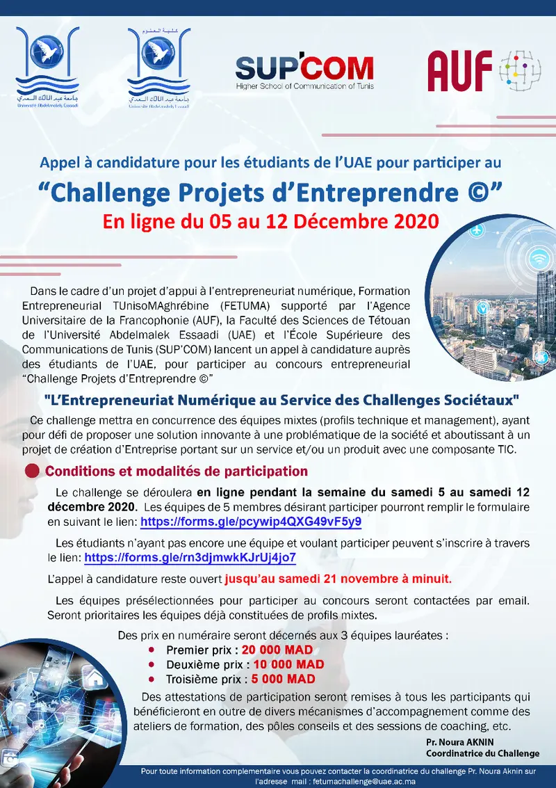

Dans le cadre d’un projet d’appui à l’entrepreneuriat numérique, Formation Entrepreneurial TUniso MAghrébine (FETUMA) supporté par l’Agence Universitaire de la Francophonie (AUF), la Faculté des Sciences de Tétouan de l’Université Abdelmalek Essaadi (UAE) et l’École Supérieure des Communications de Tunis (SUP’COM) lancent un appel à candidature auprès des étudiants de l’UAE, pour participer au concours entrepreneurial “Challenge Projets d’Entreprendre ©”
"L’Entrepreneuriat Numérique au Service des Challenges Sociétaux"
Ce challenge mettra en concurrence des équipes mixtes (profils technique et management), ayant pour défi de proposer une solution innovante à une problématique de la société et aboutissant à un projet de création d’Entreprise portant sur un service et/ou un produit avec une composante TIC.
Conditions et modalités de participation :
Le challenge se déroulera en ligne pendant la semaine du samedi 5 au samedi 12 décembre 2020. Les équipes de 5 membres désirant participer pourront remplir le formulaire en suivant le lien : https://forms.gle/pcywip4QXG49vF5y9
Les étudiants n’ayant pas encore une équipe et voulant participer peuvent s’inscrire à travers le lien : https://forms.gle/bQ8Cv14Qi2Z81gFq9
L’appel à candidature reste ouvert jusqu’au samedi 21 novembre à minuit.
Les équipes présélectionnées pour participer au concours seront contactées par email. Seront prioritaires les équipes déjà constituées de profils mixtes.
Des prix en numéraire seront décernés aux 3 équipes lauréates :
Des attestations de participation seront remises à tous les participants. qui bénéficieront en outre de divers mécanismes d’accompagnement comme des ateliers de formation, des pôles conseils et des sessions de coaching, etc.
Pour toute information complémentaire vous pouvez contacter le comité d’organisation à l’adresse mail : FetumaChallenge@uae.ac.ma
Pr. Noura AKNIN
Coordinatrice du Challenge
Pièces jointes: